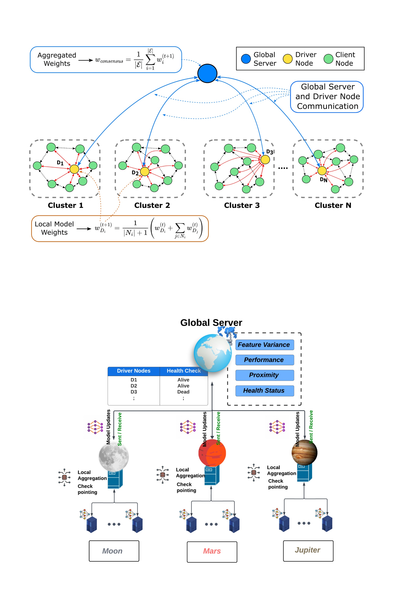
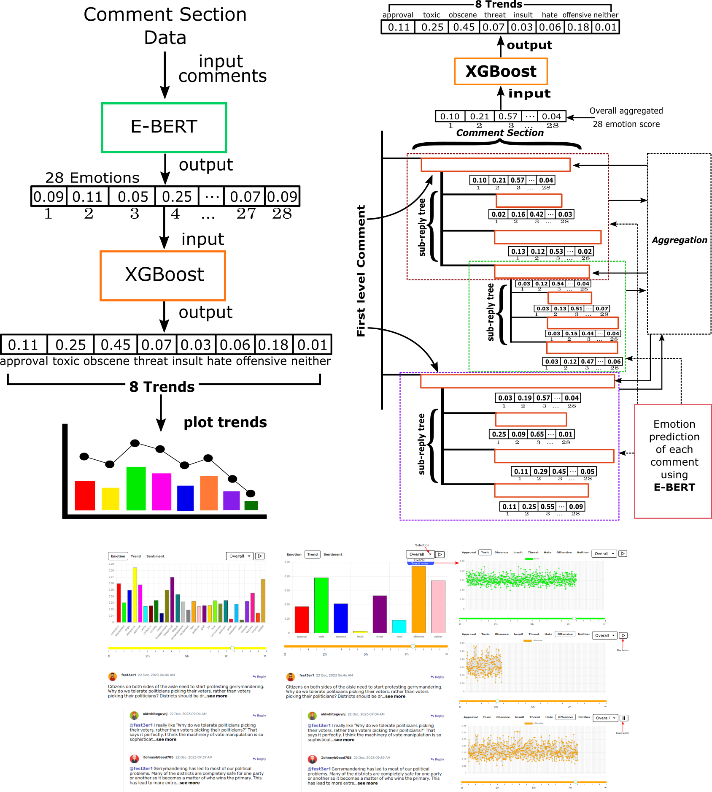
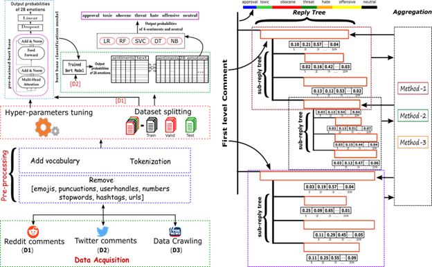
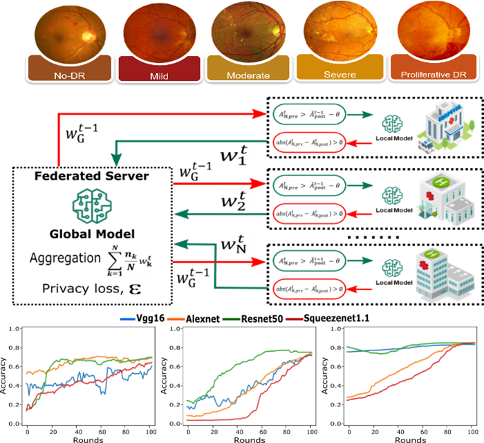
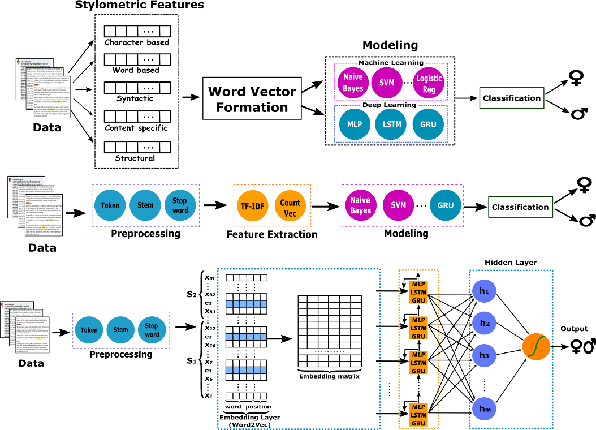
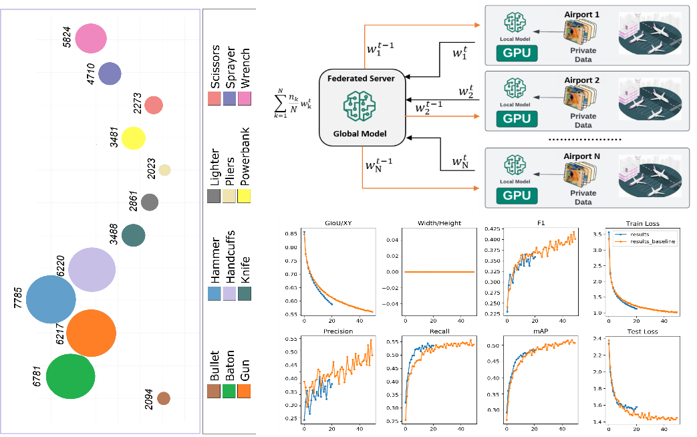
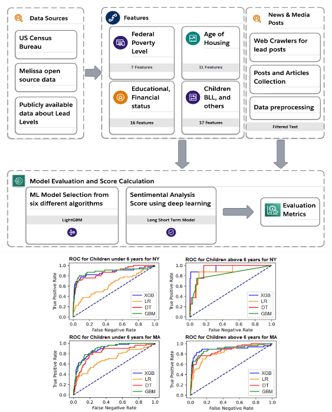
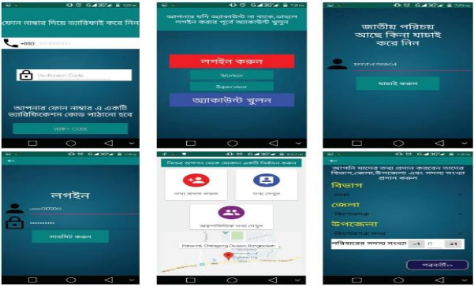

Conference Papers

Our paper introduces a groundbreaking approach to healthcare information retrieval and engagement through a personalized chatbot system empowered by Federated Learning Based GPT. The system is designed to seamlessly aggregate and curate diverse healthcare data sources, including research papers, multimedia resources, and news articles. Leveraging Federated Learning techniques, the GPT model is trained on decentralized data sources to ensure privacy and security while providing personalized insights and recommendations. Users interact with the chatbot through an intuitive interface, accessing tailored information and real-time updates on medical research and news. The system's innovative architecture enables efficient processing of input files, parsing and enriching text data with metadata, and generating relevant questions and answers using advanced language models. By facilitating interactive access to a wealth of healthcare information, this personalized chatbot system represents a significant advancement in healthcare communication and knowledge dissemination.

Federated Learning (FL) has emerged as a transformative approach for enabling distributed machine learning while preserving user privacy, yet it faces challenges like communication inefficiencies and reliance on centralized infrastructures, leading to increased latency and costs. This paper presents a novel FL methodology that overcomes these limitations by eliminating the dependency on edge servers, employing a server-assisted Proximity Evaluation for dynamic cluster formation based on data similarity, performance indices, and geographical proximity. Our integrated approach enhances operational efficiency and scalability through a Hybrid Decentralized Aggregation Protocol, which merges local model training with peer-to-peer weight exchange and a centralized final aggregation managed by a dynamically elected driver node, significantly curtailing global communication overhead. Additionally, the methodology includes Decentralized Driver Selection, Check-pointing to reduce network traffic, and a Health Status Verification Mechanism for system robustness. Validated using the breast cancer dataset, our architecture not only demonstrates a nearly tenfold reduction in communication overhead but also shows remarkable improvements in reducing training latency and energy consumption while maintaining high learning performance, offering a scalable, efficient, and privacy-preserving solution for the future of federated learning ecosystems.
@article{hossain2023monitoring,
title={Monitoring Dynamics of Emotional Sentiment in Social Network Commentaries},
author={Hossain, Ismail and Puppala, Sai and Alam, Md Jahangir and and Talukder, Sajedul},
year={2023}
}

The expansion of social media has unlocked a real-time barometer of public opinion. This paper introduces a novel framework to analyze sentiment shifts in social network comment sections, a reflection of the broader public discourse over time. Leveraging a pre-trained uncased $\RoBERTa$ model, we predict emotional scores from user comments, mapping these to key sentiment trends such as Approval, Toxicity, Obscenity, Threat, Hate, Offensive, and Neutral. Our methodology employs machine learning techniques to train a dataset that connects emotional scores with these trends, generating trend probability scores. We utilize a bottom-up recursive algorithm to aggregate emotional scores within comment threads, enabling the prediction of trend scores using three distinct aggregation methods. The results demonstrate that our emotional prediction model achieves an AUC of 0.92, and XGBoost stands out with an F1 score exceeding 0.40. Our research elucidates the temporal evolution of online public sentiment, enhancing the understanding of digital social dynamics and offering insights for strategic online interaction, intervention, and content moderation.
@article{hossain2024emovis,
title={EMOVIS: A Visual Approach to Tracking Emotional Sentiment Dynamics in Social Network Commentaries},
author={Hossain, Ismail and Puppala, Sai and Alam, Md Jahangir and Talukder, Sajedul and Talukder, Zahidur},
year={2024}
}

The proliferation of social media offers a real-time reflection of public sentiments. Sentiment analysis on such platforms yields crucial insights for sectors like market research, politics, business strategy, and public health. In this study, we introduce an innovative framework to examine evolving sentiments in social media comments and understand their wider implications. Utilizing a pre-trained BERT base uncase model, we estimate emotional values from comments and align them with various sentiment trends such as Approval, Toxicity, and Neutral, among others. By leveraging machine learning, we train on a distinctive dataset, correlating emotional values with sentiment trends to generate trend likelihood scores. Through a bottom-up methodology, we compile emotional ratings across comment threads to forecast overarching sentiment scores. Our results reveal that the BERT base uncase model excels in emotional prediction, achieving an AUC of 0.91. Meanwhile, Decision Tree models stand out, registering an F1 score above 0.40 on a macro average basis.
@article{hossain2023monitoring,
title={Monitoring Dynamics of Emotional Sentiment in Social Network Commentaries},
author={Hossain, Ismail and Puppala, Sai and Alam, Md Jahangir and and Talukder, Sajedul},
year={2023}
}

The diagnosis of diabetic retinopathy may be streamlined and expedited with the help of deep learning, which is an efficient way to help an eye specialist examine the enormous amount of retinal images. For these strategies to be effective, big datasets must be consolidated and used for training. Medical data privacy laws frequently make it impossible to gather and share patient data on a single system. In this paper, we introduce a collaborative differentially private federated learning system that enables deep learning image analysis without transferring patient data between healthcare organizations. We investigated four different machine learning algorithms—AlexNet, ResNet50, SqueezeNet1.1, and VGG16—for varying amounts of noise using a dataset of 35120 retina images divided into five classes—No Diabetic Retinopathy, Mild, Moderate, Severe, and Proliferative Diabetic Retinopathy (PDR). Our ResNet50 model outperformed the state-of-the-art diabetic retinopathy prediction models with an accuracy 83.05 % when we added no noise, and with an accuracy 79.35% with a noise multiplier of 8.0. By including our checkpoint techniques, we have reduced the total communication overhead by 49 % when compared to federated learning without checkpoints.
@inproceedings{hossain2023collaborative,
title={Collaborative differentially private federated learning framework for the prediction of diabetic retinopathy},
author={Hossain, Ismail and Puppala, Sai and Talukder, Sajedul},
booktitle={2023 IEEE 2nd International Conference on AI in Cybersecurity (ICAIC)},
pages={1--6},
year={2023},
organization={IEEE}
}

Combatting Identity Attacks in Online Social Networks: A Multi-Layered Framework Using Zero-Knowledge Proof and Permissioned Blockchain
Md. Jahangir Alam, Jannatul Ferdaus, Sai Puppala, and Talukder Sajedul
2023 IEEE/ACM International Conference on Advances in Social Networks Analysis and Mining (ASONAM)
Identity attacks, such as impersonation, identity theft, and fraudulent account creation,
pose significant threats to the security and trustworthiness of Online Social Networks (OSNs).
In this paper, we propose a robust and secure framework to verify user identities without
compromising their privacy by developing a multi-layered framework leveraging zero-knowledge
proof (ZKP) and Hyperledger Fabric private blockchain. We introduce a blockchain-based
government identity provider system, coupled with a zero-knowledge proof-based signup process
for social networks. Our prototype authenticates user identities in multiple layers,
effectively mitigating fraudulent, cloned, and multiple account creations. Our experiments
with n (n = 50) users showed a 100% success rate for our system, highlighting its effectiveness
compared to other OSNs.
@article{alam2023combating,
title={Combating Identity Attacks in Online Social Networks: A Multi-Layered Framework Using Zero-Knowledge Proof and Permissioned Blockchain},
author={Alam, Md Jahangir and Hossain, Ismail and Puppala, Sai and Talukder, Sajedul},
year={2023}
}

Gender identification from social media texts can be useful in detecting and preventing the use of fake accounts for malicious purposes. By ensuring that social media users accurately represent their gender, platforms can promote a safer and more inclusive online community for all users. Although works on gender identification have already been done in English, Russian, Arabic, and other languages, no work has been done in Bangla and related languages so far. In this paper, we apply stylometric, TF-IDF, and word embedding approaches to identify the author's gender from Bangla texts using a dataset containing 5000 posts collected from different Facebook groups. We train seven traditional machine learning models (NB, SVM, LR, DT, RF, SGD, KNN) and three deep learning-based models (MLP, LSTM, GRU), where traditional models outperform deep learning models for all except the stylometric features. Stochastic Gradient Descent (SGD) outperforms state-of-the-art with accuracy and F1-Score of 78.33% and 87.67% respectively in determining gender from the text using TF-IDF features.
@inproceedings{puppala2023machine,
@article{sultan2023combating,
title={Combating Identity Misrepresentation in Social Media through Bangla
Text-Driven Gender Recognition},
author={Ahmed, Sultan and Alam, Md Jahangir and Hossain, Ismail and Talukder, Sajedul},
year={2023}
}
}

To maintain border and transportation security against a variety of threat profiles, it is essential to find contraband in airport baggage X-rays. Security inspectors have a tougher time avoiding misdetection due to a lack of support staff and a stressful workplace. Although machine learning models can detect contraband automatically, most of the models used in this process train the data in a centralized learning (CL) way, posing possible security and privacy concerns. To address this, we propose a Federated learning (FL)-based architecture to detect contraband in x-ray baggage security images while maintaining user privacy. Our model is trained and evaluated using the most recent state-of-the-art YOLOv7, SSD, and Faster R-CNN algorithms, paving the door for large-scale automatic detection of contraband in airports across the globe through collaboration. We achieve a global accuracy of 90.1%, 86.4%, and 66.7% with Faster R-CNN, SSD, and YOLOv7 algorithms respectively using the PIDray dataset. Our experiment reveals the challenges and potential of utilizing FL to detect contraband in airport luggage X-rays, even though the performance is comparable with the benchmark performance of non-FL algorithms.
@inproceedings{puppala2022towards,
title={Towards federated learning based contraband detection within airport baggage x-rays},
author={Puppala, Sai and Hossain, Ismail and Talukder, Sajedul},
booktitle={2022 IEEE International Conference on Machine Learning and Applied Network Technologies (ICMLANT)},
pages={1--6},
year={2022},
organization={IEEE}
}

One of the most avoidable environmental public health problems is childhood lead exposure, which can lead to a variety of disorders such as reduced muscle coordination, stunted bone and muscle growth, damaged nervous system, impaired speech and language, and seizures. It is difficult to predict whether someone will be exposed to lead, but studies have found a correlation between lead exposure and things like household income, ethnicity or refugee status, reliance on Medicaid, older homes built before 1978 with lead paint in poor condition, proximity to industry, and people working in lead-exposed environments like manufacturing, repair, welding, or renovation jobs. We predict potential lead exposure at the zip code level using data from Massachusetts and New York's Blood Lead Levels that are publicly available. Additionally, using data gathered from news stories and other media, we offer a sentimental analysis approach based on Long Short Term Memory (LSTM) deep learning algorithm to assess how well the lead programs are being implemented in these states. Using six different machine learning algorithms, we achieved the best performance with LightGBM, with an accuracy of 83.6 percent for New York and 89.1 percent for Massachusetts and an f1-score of 0.81 and 0.83, respectively. Through the average sentimental analysis ratings for New York and Massachusetts, we found a strong correlation with elevated blood lead levels reported within the states. When compared to earlier researchers' calculations of AUC ROC scores at the individual level, our methodology yields greater AUC ROC scores.
@inproceedings{puppala2023machine,
title={Machine learning and sentiment analysis for predicting environmental lead toxicity in children at the zip code level},
author={Puppala, Sai and Hossain, Ismail and Talukder, Sajedul},
booktitle={2023 IEEE 2nd International Conference on AI in Cybersecurity (ICAIC)},
pages={1--6},
year={2023},
organization={IEEE}
}

Mobile Crowdsourcing System (MCS) has emerged as an effective method for data collection and processing. In this paper, a brief discussion of the concept of Mobile Crowdsourcing system has been given where the main criteria of MCS is followed. The government or the census bureau performs the role of end user, the internet provider and some monitoring supervisor performs the role of service provider and the smart phone users can perform the role of worker. The whole country has been divided into some regions for counting the population, each region has been divided into several sub-regions. There will be a supervisor in each sub-region with a number of selected workers who will be checked on their own reliability and authentication on the basis of verification of personal information. An authenticated worker can collect information from a sub-region and the supervisor is able to determine the location of the worker. After collecting information, redundancy is checked using National Identity or birth registration number and stored after completing the verification process and used to make statistics including total population, population density, rate of birth, rate of death, rate of literacy etc. Population and household census process is a more important issue for the country. So, a census system or model has been proposed and designed for performing the whole census process with more authentication that reduce cost and time and make a faster calculation.
@inproceedings{mukul2020evolutionary,
title={An Evolutionary Population Census Application Through Mobile Crowdsourcing},
author={Mukul, Jannatul Ferdaus and Hasan, Mohammad and Zahid Hassan, Md},
booktitle={International Conference on Intelligent Computing \& Optimization},
pages={1000--1010},
year={2020},
organization={Springer}
}
Book Chapters
Research Articles
- Talukder Sajedul, Jannatul Ferdaus, Sai Puppala, “A Novel Hierarchical Federated Learning with Self-Regulated Decentralized Clustering” (CCSC EA), Sep 2022.
- Talukder Sajedul, Puppala Sai, Jannatul Ferdaus, “Prediction of Childhood and Pregnancy Lead Poisoning Using Deep Learning” (CCSC EA), Sep 2022.
- Talukder Sajedul, Jannatul Ferdaus, Puppala Sai, “Federated Learning-based Contraband Detection within Airport Baggage X-Rays”(CCSC EA), Sep 2022.